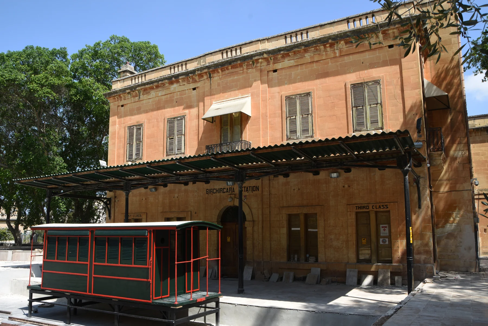

The old station, its public garden and St Helen context orient the older centre. They do not prove that a listing is beside a landmark, quiet, level or easy to park near.
BIRKIRKARA · READ THE STREET
Old core. Everyday city.
Birkirkara is a large, layered locality. Compare the older station and St Helen context with Valley Road and newer mixed streets, then verify the official locality on every edge address.

ONE LARGE LOCALITY, SEVERAL READINGS
Do not flatten Birkirkara into one experience.
The Local Council describes a locality where older narrow streets and historic anchors coexist with newer development. That broad context helps orient a search, but the exact street still determines the practical setting of a home.
Valley Road and nearby streets combine homes, shops and dining. Check the entrance, frontage, floor and current surroundings rather than relying on the locality name alone.
Fleur-de-Lys, Swatar and Mrieħel or CBD labels need their own address check. Iklin, Lija, Balzan and Santa Venera remain separate property contexts.
The station tells one chapter.
The Local Council identifies the old railway station and surrounding public garden as part of Birkirkara's heritage. The landmark is orientation, not evidence that Malta has a current passenger railway or that a home has station access.
Birkirkara Local Council ↗Edges need a second look.
Shared services and a continuous urban fabric do not merge neighbouring localities. Confirm the official locality and street before describing a property as Birkirkara or attaching a district label.
Office of the Address Registrar ↗VERIFIED EVERYDAY EXAMPLES
Operator-backed anchors, without a ranking.
These examples establish food and daily-life context. They do not claim that a venue is closest, best or suitable for every home. Check current menus, hours, delivery and access directly.
Bacaro Veneziano
The operator places its Italian kitchen and wine bar on Triq Ganu, Birkirkara, with service across different parts of the day. Current menus and hours remain a direct check.
Operator site ↗Sapori Café
The operator identifies its Birkirkara venue on Valley Road near the football club. Its separate Qawra venue must not be confused with this location.
Operator site ↗Andrew's Snack Bar
The operator lists its Birkirkara shop at 15 Triq Sant' Antnin and describes homemade food, takeaway and catering. Availability and menu details can change.
Operator site ↗Old station garden
The council describes a public garden around the old railway station. Treat present access, opening conditions and events as current checks rather than permanent guarantees.
Local Council source ↗Primary care is shared; locality labels are not.
Primary HealthCare places Birkirkara Health Centre at the Civic Centre on Tumas Fenech Street and currently lists Birkirkara, Iklin, Lija and Balzan in its main catchment. That shared service does not merge the four property locations. Confirm current clinic services and opening arrangements directly.
No railway memory becomes a transport promise.
The historic station is not a current rail service. This edition draws no district boundary or generic route. Walking geometry, bus information, current car-traffic estimates and taxi-price observations remain separate sources that require exact endpoints, mode and observation time.
Load the Birkirkara overview only when you need it.
The map shows Birkirkara and nearby labels for orientation. It deliberately draws no locality border, property route or journey time and loads from OpenStreetMap only after your click. Neighbouring labels inside the viewport are not absorbed into Birkirkara.
Birkirkara Local Council · Local Council geography and history · Office of the Address Registrar · Birkirkara Health Centre · Bacaro Veneziano · Sapori Café · Andrew's Snack Bar · Wikimedia Commons image record

No ranking, fixed opening hours, property-specific route, accessibility promise, guaranteed outlook, parking claim or locality-wide journey time is claimed. A weekly-shopping operator was intentionally omitted until a current customer-facing Birkirkara store address is independently verified.